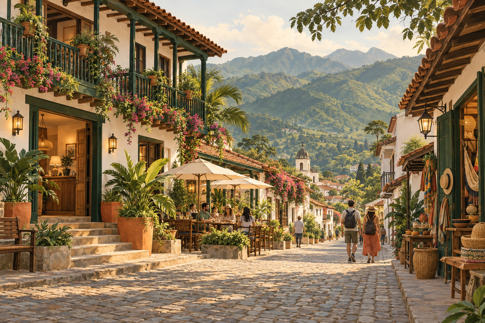

Before deciding
Understand the portal’s value.
Understand how it complements your current channels and what we aim to offer travellers.
Why take part ↗For local businesses
A space for owners and representatives who want to learn how their business can take part in Explorando Lugares.
Register interest ↗
Before deciding
Understand how it complements your current channels and what we aim to offer travellers.
Why take part ↗01 · Start here
Register your interest and a way to contact you. We will review the request before continuing.
Register interest ↗02 · Understand the process
We explain what we review, what happens before publishing and which decisions are made with you.
How it works ↗03 · Future options
Review the proposed options. They are not yet available to purchase and prices have not been set.
View plans ↗04 · Support your destination
Learn about the local destination liaison role and how a reference business can help the destination grow.
Support your destination ↗Travelling? Find guides, stories and destinations to inspire your visit.
Explore destinations ↗